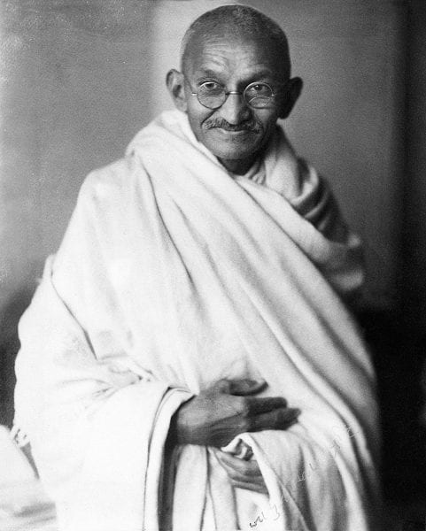
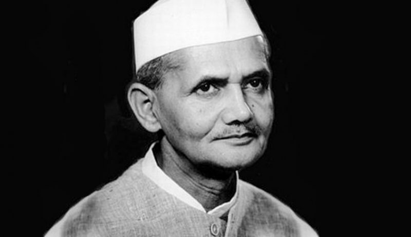

Mahatma Gandhi

Born on 2nd October 1869, Mohandas Karamchand Gandhi is revered as Father of the Nation forhis immense sacrifices for India. He not only ushered India towards freedom, but he also became the inspiring figure for many independence struggles and rights movements across the world. Popularly called Bapu, Gandhi introduced the doctrine of non-violence in India. According to him, independence was to be achieved through a combination of non-violent movement and non-co-operation with the British. Thehistoric Non-Cooperation movement, Dandi March and the Quit India movement were all started under his leadership.
Subhash Chandra Bose

One of the greatest Indian freedom fighters that history witnessed was none other than Subhas Chandra Bose. He was born on 23rd January 1897. He was a radical nationalist and his ultimate patriotism carved a hero out of him. Bose belonged to the extremist section of the Indian freedom fighters. He was the leader of a radical youth wing of Congress from the early years of the1920s till the end of 1930. Bose disagreed with the ideals of non-violence promoted by Gandhi, insteadof believing that only armed revolt could oust the British from India. The founder of the Forward Bloc,he escaped the eyes of the British to ultimately reach Germany during the second world war. He raisedthe Indian National Army (INA) and with Japanese help, was able to free a portion of Indian territoryfrom the British in Manipur, but was ultimately defeated due to Japanese surrender to the British.Although he is believed to have died in a plane crash in 1945, his death remains shrouded in mystery todate.
Sardar Vallabhbhai Patel
Vallabhbhai Patel was born on 31st October 1875. A senior leader of the Indian National Congress, he had an immense contribution to the Indian freedom struggle as one of the most influential and strong-minded Indian freedom fighters. He was the brain and mind behind the integration of India into a united country. He was one of the most influential leaders of Gujarat, who organized peasant movements against the British based on Gandhi’s ideals of non-violence. One of the first congress leaders to have accepted the British plan of partition for India, he is remembered for his role in integrating the princely states into the dominion of India. His efforts led to the integration of around 562 princely states. After independence, he served as the first home minister and deputy prime minister of India.
Jawaharlal Nehru
Pandit Jawaharlal Nehru was born on 14th November 1889. He was the single child of Motilal Nehru and Swarup Rani Nehru. Nehru was one of the most renowned barristers and was known for his intellectual capabilities which soon made him one of the greatest politicians India had ever seen. Nehru, under the approval of Gandhi, his mentor, rose to become one of the most dominant figures in Indian politics from the 1930s onwards. Nehru, after much deliberations, accepted the partition proposal for India in 1947 and took oath as the First Prime Minister of India after attaining independence. His birthday on 14 November is widely celebrated in India as Children’s day.
Lal Bahadur Shastri

Lal Bahadur Shastri was born on 2nd October 1904 in the state of Uttar Pradesh. He was conferred with the title of Shastri which in English is termed as Scholar. At the age of only sixteen, he left his studies to join the non-cooperation movement at the call of Gandhi. Later, he graduated with a first-class degree from Kashi Vidyapeeth, a national institution of higher education inaugurated by Gandhi. He was one of the most proactive Indian freedom fighters who participated in various movements such as the Quit India movement, Civil Disobedience movement and other satyagrahas led by Mahatma Gandhi. Lal Bahadur Shastri was incarcerated by the British for considerable periods during his lifetime. Post attaining independence, he first became the Home Minister and later was made the Prime Minister of India in the year 1964.